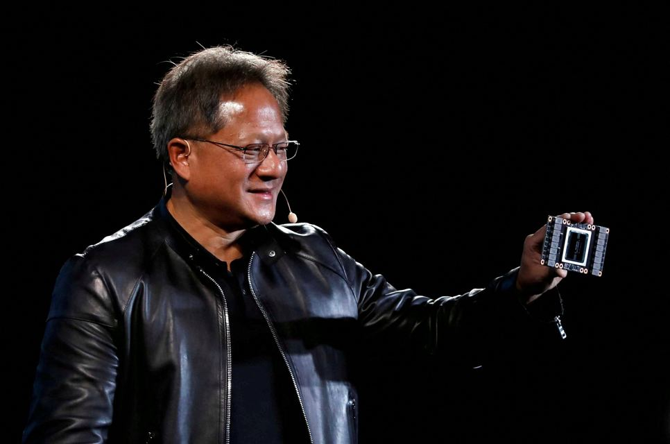

El fulgor de Nvidia se oscurece sin su rey Midas: así es el tortuoso camino que le espera a la empresa clave para la IA

La salida de Jensen Huang, envuelto en un escándalo de infidelidades y un supuesto espionaje, abre un futuro incierto en el fabricante de chips y tendrá consecuencias en toda la industria de la inteligencia artificial
Convencido de que un día el ordenador personal sería un dispositivo de consumo utilizado para ejecutar juegos, música e imágenes, Jensen Huang, junto a otros dos ingenieros, fundó Nvidia en 1993 para fabricar chips gráficos, usados en un principio en videojuegos. Seis años después llegaría el estreno en Bolsa. Durante más de dos décadas la compañía tuvo un perfil más bien anodino. Su suerte cambió a partir de 2015. Estaba en el sitio adecuado en los albores de una revolución. Cuando la inteligencia artificial (IA) era solo el sueño de unos pocos frikis, sus chips se convirtieron en la piedra filosofal de una tecnología ahora llamada a cambiar la humanidad. Desde entonces todo ha ido muy…
El consejo de administración de Nvidia ha contratado a una empresa de cazatalentos para identificar posibles candidatos que puedan sustituir a Jensen Huang, según ha contado una fuente de la compañía a Bloomberg. El papel de Colette Kress como consejera delegada se espera que sea interino y las quinielas para encontrar un sustituto que esté a la altura del desafío ya circulan por el mercado. De momento, han salido algunos nombres de destacados directivos de la industria financiera como Lisa Su, consejera delegada del rival de Nvidia, Advance Micro Devices; Rene Hass, jefe de Arm Holdings o el líder de Micron Technology, Sanjay Mehrotra. En el debate sobre el sucesor de Huang ha intervenido…